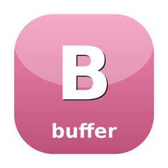

Cell-grid value objects for terminal rendering
Immutable Buffer (2-D cell grid) and Cell (rune, style, link, width) value objects forming the shared data model for terminal rendering across the SugarCraft ecosystem. Wide-char (CJK/emoji) handled via width=2 with mandatory continuation cells.
composer require sugarcraft/candy-bufferuse SugarCraft\Buffer\Buffer;
use SugarCraft\Buffer\Cell;
use SugarCraft\Buffer\Style;
// Create a 20x3 buffer filled with blank cells.
$buf = Buffer::new(20, 3);
// Set a cell at (col=5, row=1).
$buf = $buf->withCellAt(5, 1, Cell::new('H'));
// Blit a 2x2 sub-buffer at origin.
$sub = Buffer::new(2, 2)->withCellAt(0, 0, Cell::new('A'));
$buf = $buf->withRegion($sub, Buffer::new(2, 2));
// Read a cell back.
$cell = $buf->cellAt(5, 1);
echo $cell->rune(); // 'H'
// Access dimensions.
echo $buf->width(); // 20
echo $buf->height(); // 3The Buffer::diff() method is declared but not yet implemented. Step-26 (step-14/15/16/17/18 consumer migration unblocked first) implements the delta-ANSI emitter supporting ECH/REP/ICH/DCH sequences for bandwidth-efficient SSH rendering.
| Class | Method | Description |
|---|---|---|
| Buffer | new(int, int) | Factory: creates width×height grid of blank cells |
| Buffer | cellAt(int, int) | Bounds-checked cell accessor; throws OutOfRangeException |
| Buffer | withCellAt(int, int, Cell) | Immutable cell setter; returns new Buffer |
| Buffer | withRegion(Region, Buffer) | Blit source Buffer into this Buffer's region; returns new Buffer |
| Buffer | width(), height(), region() | Dimension accessors |
| Buffer | diff(Buffer) | Stub — returns []; step-26 implements delta-ANSI emitter |
| Cell | new(string, ?Style, ?Hyperlink, int) | Factory with rune, style, link, width (1 or 2) |
| Cell | rune(), style(), link(), width() | Property accessors |
| Cell | continuation() | Factory: empty rune, null style/link, width=0 |
| Position | new(int, int) | Factory: col, row |
| Region | new(Position, int, int) | Factory: origin, width, height |
| Region | contains(int, int) | Hit-test a cell coordinate |
| Style | new(?int, ?int, int) | Factory: fg (0xRRGGBB), bg, attrs bitmask |
| Hyperlink | new(string, string) | Factory: url, id |